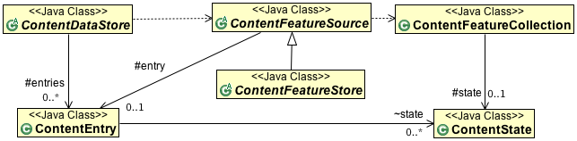
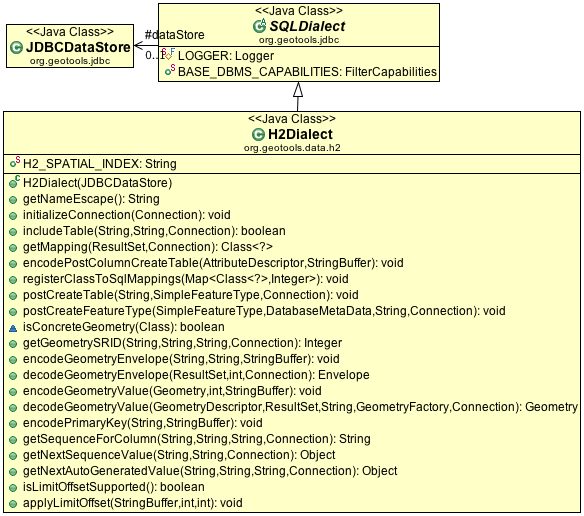

Internals¶
The internals of gt-jdbc layout the code for JDBCDataStore and abstract classes that are extended for each new format.
Related:
JDBCDataStore¶
The JDBCDataStore class is an extension of ContentDataStore defined by gt-data.
ContentDataStore is extended with a concrete JDBCDataStore that:
- delegates out to a SQLDialect that is implemented for each format
- makes use of custom extensions for:
- JDBCState
- JDBCFeatureSource supported by a feature reader that makes use of a light-weight feature implementation
- JDBCFeatureStore supported by two feature writer implementations
You will find a careful attention to details and steps taken to minimise any duplication of code. The FeatureStore implementation maintains an internal delegate JDBCFeatureSource in order to smoothly handle getFeature() requests without duplicating code.
SQLDialect¶
If you would like to implement support for an additional format please ask on the developers list. The clearest starting place is to review the gt-jdbc-h2 code which serves as the reference implementation.
To have your format accepted by GeoTools you will also need to extend the conformance test cases as shown in the gt-jdbc-h2 module.
Here is a brief illustration of SQLDialect as implemented by the gt-jdbc-h2 plugin.
As expected this class is required to fill in the H2 specific details:
- how to decode and encode Geometry and Bounds information
- handle database specific functionality such as sequences
- follow up to table creation (often needed if geometry columns need to be registered)
Your implementation of these methods may depend on the conventions of your database. Oracle spatial for example will have its own idea on how to handle SRID values, while a simple Java database like H2 will make use of the GeoTools CRS class.